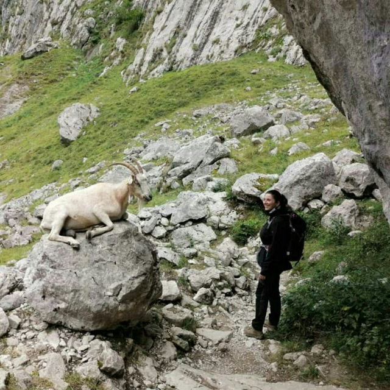

Sobre mi
Holaaa! Me llamo Arantxa Fernández. Me encantan las aventuras, la naturaleza, cocinar, aprender nuevas recetas y, por supuesto, adoro comer.
Creación
He creado esta web para ir creándome poco a poco mi propio recetario. Iré añadiendo poco a poco las recetas que llevo tanto tiempo guardando en notas de papel, del móvil y en la aplicación de COOKmate (podéis encontrar el enlace abajo a la izquierda, es una aplicación muy útil!).
Contacto
No dudéis en contactarme para cualquier duda o sugerencia a través del formulario de contacto.
¡Contáctame!